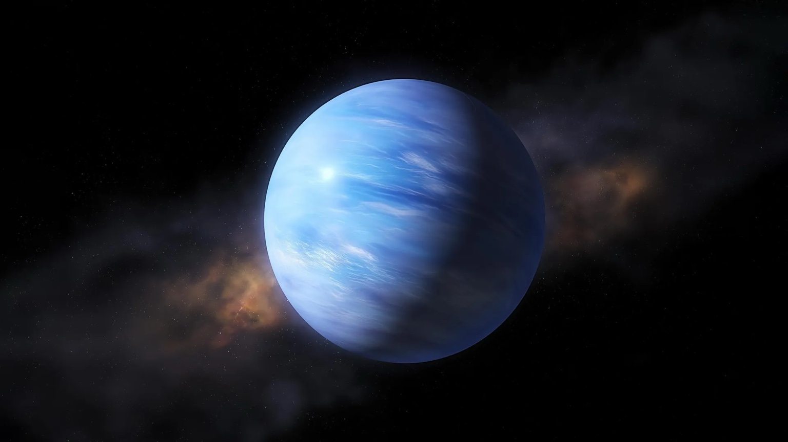

Saltar para o conteúdo
Imagem de Neptuno em azul intenso, com zonas de nuvens visíveis.
Caraterísticas gerais:
- Gigante gelado e o planeta mais distante do Sol (entre os 8 planetas).
- Tem anéis ténues e várias luas, Tritão é a maior.
- O ano de Neptuno dura cerca de 165 anos terrestres.
Superfície e atmosfera:
- Atmosfera com hidrogénio, hélio e metano (cor azul).
- Famoso por ventos muito fortes e tempestades.
Temperatura:
- Muito frio devido à grande distância ao Sol.
Curiosidades:
- Apesar de estar longe do Sol, pode apresentar atividade atmosférica intensa.